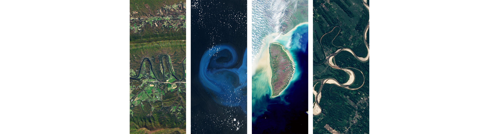
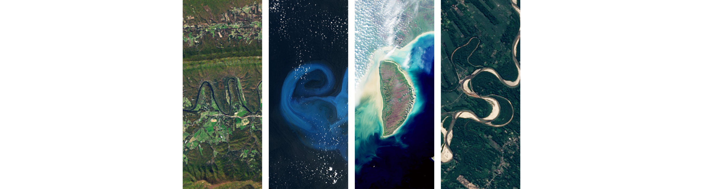

Instructor

Master of Environmental Data Science (MEDS)

This course introduces the spatial modeling and analytic techniques of geographic information science to data science students. The emphasis is on deep understanding of spatial data models and the analytic operations they enable. Recognizing remotely sensed data as a key data type within environmental data science, this course will also introduce fundamental concepts and applications of remote sensing. In addition to this theoretical background, students will become familiar with libraries, packages, and APIs that support spatial analysis in R.
This website was designed by Sam Csik.